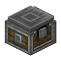

定量弹物的置物台
参数
类型物流元件
工艺工作台合成
触发定量
详细教程
怎么获得
合成是竖排三格：上面金板，中间置物台，下面一个齿轮，一次做一个。金板不好压，先把压床的模具换成金锭再开工。
金板要把金锭压薄，置物台则是安山机壳加木板；两样都不算贵，做两三个摆成一条分流线很常见。置物台单独也能用，弹射版只是多了定量功能。
怎么用
潜行右击可以设定目标，物品攒到设定数量才会被弹出去；不设目标时它默认往正前方弹一格。设定值可以在界面里改，改完不用重新放手。
目标连线要垂直于置物台的侧面，斜着指过去不会生效；旁边放个侦测器能抓到我弹射的瞬间，拿去计数很顺手。目标方块要能被容器识别，对着空气指不会生效。
常见坑
数量没攒够时它一动不动，看着像坏了；先检查设定值是不是比实际产量还高。台上堆满而数量又设得太高，它就永远不出手。
目标被挡住或容器满了，物品会堆在台上不走；把出料口留空一格，别让传送带贴着它放。弹射方向只认侧面，从顶上指下去不算数。
获取方式
官方教程 · 使用弹射置物台
- 手持弹射置物台时，潜行右击可以设置弹射目标位置
- 现在，只有等被放置的物品数量等于所设定数量时，弹射置物台才会弹射物品
- 生物和玩家站在弹射置物台上时会被直接弹射
- 现在，放置下的弹射置物台会将物品弹射至目标位置
- 限制范围内的任意距离和高度均可作为有效目标地点
- 但是，目标位置与置物台的连线，必须垂直于置物台的侧面
- 如果没有设置有效目标位置，弹射置物台会直接将其前方一格设为默认目标位置
- 提供旋转力可为其蓄力
- 蓄力完毕后，放置在它上方的物品会被立刻弹射出去
- 如果目标为容器，则弹射置物台会等待容器有位置后再弹射物品
- 通过面板，可以调整弹射所要求的物品数量